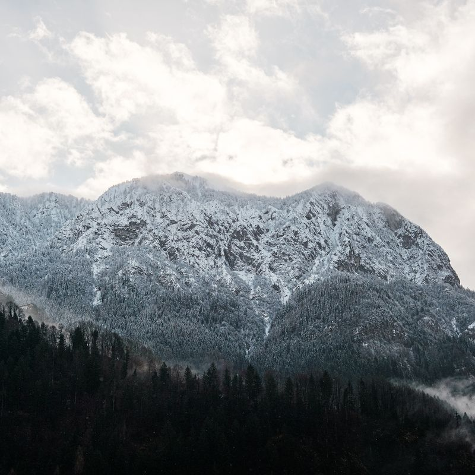
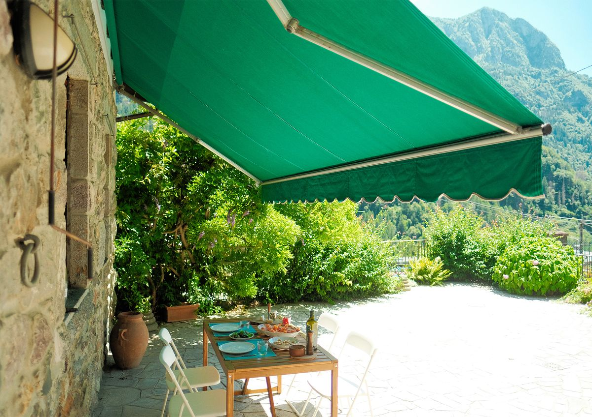
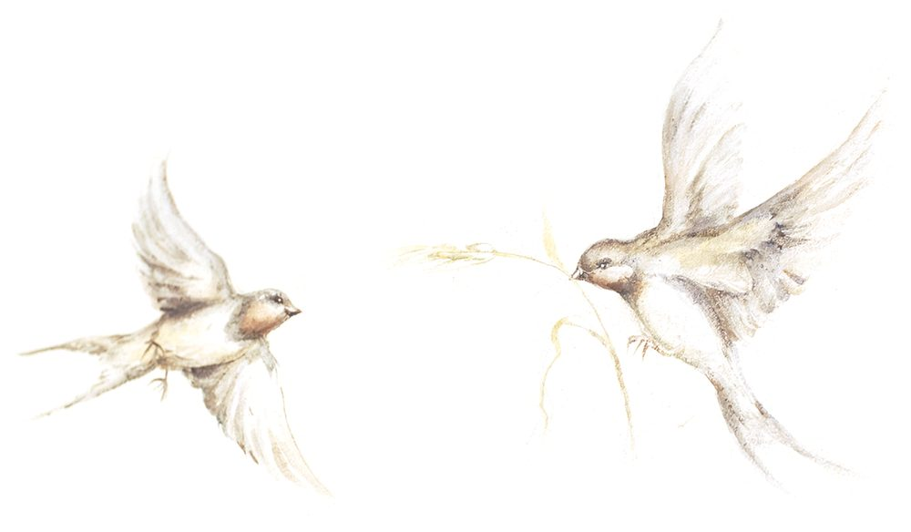
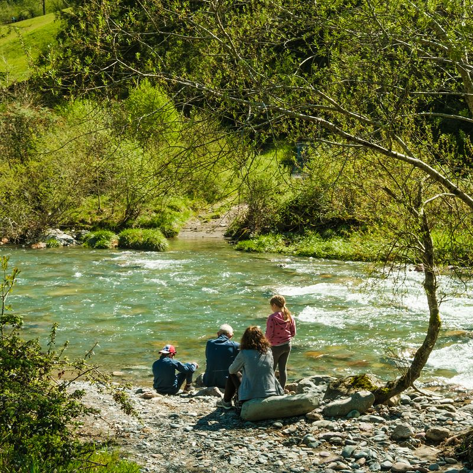

Inverno
Neve e sci: le piste degli Spiazzi di Gromo sono a circa 15 minuti d'auto, lungo 7 km di strada di montagna. Al rientro, la casa è calda grazie al riscaldamento autonomo.


Ampio appartamento di 150 m² a Gromo, a 15 minuti a piedi dal borgo medievale, uno dei borghi più belli d'Italia, con una terrazza panoramica privata di 50 m² affacciata sulla valle e sulle montagne — unica nel paese. Due camere, divano letto in salotto, cucina attrezzata con lavastoviglie, lavatrice e riscaldamento autonomo. Parcheggio gratuito.
Le Rondini è una casa di montagna luminosa e spaziosa: un grande soggiorno con divano letto, una camera matrimoniale grande e una camera con due letti singoli e soffitto a volte. Il vero gioiello è la terrazza di 50 m², ideale per colazioni al sole e cene al tramonto con vista sulla montagna. Riscaldamento autonomo per stare al caldo tutto l'inverno.
Ideale per famiglie e gruppi di amici rispettosi: in inverno le piste degli Spiazzi di Gromo sono a circa 15 minuti d'auto. In estate sentieri, borgo medievale e Cascate del Serio sono facilmente raggiungibili.
Fino a 6 ospiti: due camere e un divano letto.
Il borgo medievale
Uno dei borghi più belli d'Italia.

Neve e sci: le piste degli Spiazzi di Gromo sono a circa 15 minuti d'auto, lungo 7 km di strada di montagna. Al rientro, la casa è calda grazie al riscaldamento autonomo.

Sentieri di montagna, il borgo medievale di Gromo e, in estate, le Cascate del Serio. E poi colazioni al sole e cene al tramonto sulla terrazza.
Percorsi sospesi tra gli alberi, aperti nella bella stagione: date sul sito.
Sito web: Parco Sospeso nel BoscoScrivici date e numero di ospiti: la richiesta arriva direttamente a noi.
Ti risponderemo al più presto all'indirizzo email che ci hai indicato.